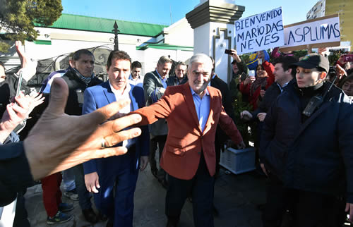
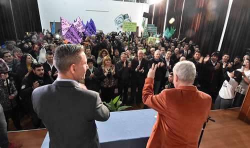
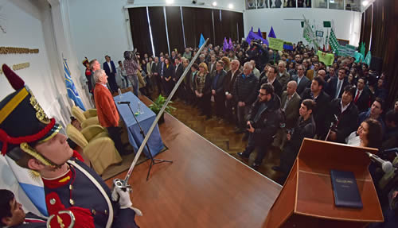

Real Chubut - Agencia de Noticias


Das Neves reasumió y dijo que “no hay cosa más impresionante que el respaldo de la gente”

De esta manera el gobernador agradeció el contundente apoyo recibido del pueblo chubutense. Fue al retomar el cargo en una emotiva ceremonia ante una colmada Casa de Gobierno en la que afirmó: “vengo a hablar de la vida y no de la muerte”. Resaltó al vicegobernador Arcioni por su responsabilidad ante “el momento que le tocó vivir y la forma en que lo hizo” y anunció que enviará a la Legislatura una ley “para terminar con los privilegios de los fueros”.
En una ceremonia en la que primó la emoción, el gobernador del Chubut Mario Das Neves retomó este sábado sus funciones como titular del Ejecutivo Provincial. Pronunció un discurso de fuerte contenido político y humanista y además realizó anuncios como el envío la semana que viene a la Legislatura de una Ley “para terminar con los privilegios de los fueros”.
Pasadas las 11 horas y luego de innumerables muestras de afecto recibidas de parte de la gente que se congregó en la Peatonal frente a la Casa de Gobierno, Das Neves habló desde el Salón de los Constituyentes y dijo: “quiero sintetizar en dos palabras lo que involucra a mucha gente: muchas gracias” y en ello incluyó “a la familia, a los amigos, al equipo de gobierno y a los cientos y miles de llamados y mensajes que llegaron y llegan” expresó visiblemente emocionado. “Estaba ansioso por estar”, confesó seguidamente.
También resaltó la figura del vicegobernador Mariano Arcioni, sentado a su lado en el escenario, “quiero hacer un agradecimiento muy especial, por su responsabilidad, por el momento que le tocó vivir y la forma en que lo hizo” dijo, para también agradecer a los legisladores nacionales, tres de ellos presentes en el acto como Sixto Bermejo, Nelly Lagoria y Ana Llanos e intendentes y legisladores provinciales, además “de a todos”, afirmó.

“VENGO A HABLAR DE LA VIDA Y NO DE LA MUERTE”
“Yo vengo a hablar de la vida y no de la muerte” dijo contundente Das Neves y recordó cuando en septiembre de 2002 puso en marcha este proyecto político centrado en “la inclusión social y territorial y eso es vida”. Luego habló de la época de las inauguraciones y de lo que es la gestión y dar respuestas a la gente “esto es lo importante: ¿sino para qué estamos?” preguntó. Y agregó: “yo no estoy resignado a nada. Solamente esta es la vida que me tocó y voy a jugarla fuerte hasta último momento, porque me siento acompañado. Porque quiero transmitirles que no hay cosa más impresionante que el respaldo de la gente. No hay”, afirmó.
Y continuó: “cuando uno piensa en la vida, piensa en la educación, en los servicios”, para luego enviar un mensaje en relación a los rumores que se trataron de instalar sobre su salud: “aquellos que especulan con la muerte, un grupo minúsculo, sectores miserables de la política: no les contestemos nada. No malgastemos tiempo en eso. Porque a nosotros la gente nos ratificó en 2003, 2005, 2007, 2009, 2011, 2013 y 2015. Esa es la respuesta de la gente”.
Luego hizo un racconto de las acciones encaradas ante el Gobierno Nacional y dijo que “no nos ha ido tan mal” y enumeró que “planteamos un esquema de viviendas y van apareciendo, un esquema de puertos y va apareciendo” y citó el ejemplo de la reparación del Muelle Almirante Storni que por más de 400 millones de pesos se realizará, “y las rutas que van apareciendo”.

CONVOCATORIA Y ANUNCIO
También Das Neves hizo una convocatoria “a actuar con mucha generosidad, con mucha amplitud” y afirmó: “yo no miro para atrás” y no dejó de cuestionar a algunos miembros de la oposición que “se muestran preocupados por el gas” cuando “no se preocuparon cuando este fue el primer gobernador del país que en marzo interpuso una cautelar”.
Y en un mensaje hacia la Legislatura dijo: “hay que entender que hoy se es mayoría y mañana minoría. Hoy se puede tener mayoría en el Poder Legislativo y mañana minoría, pero si todos tiramos para adelante nos va a ir muy bien a todos los chubutenses. De eso no tengan ninguna duda, ese es mi propósito y en última instancia alguien me lo está pidiendo. Por eso estoy acá”.
Das Neves reiteró una vez más que “estoy convencido que tenemos un pueblo absolutamente maravilloso, con fuerza, con polenta que produce riquezas”. Y agregó: “queremos ir para adelante y si mañana el tema de los fueros, es el tema que nos une a todos, animémonos. Nosotros la semana que viene vamos a mandar una Ley para terminar con los privilegios de ciertos sectores”.
También les dejó un mensaje a los intendentes a quienes agradeció “la confianza”, aclarando que “una cosa es la confianza cuando hay plata y otra cosa cuando no hay plata. Es un ida y vuelta y acá hubo un ida y vuelta. No tengan la menor duda que todos vamos a salir adelante. Los chubutenses”.
“Nosotros trabajamos desde el 2002 pensando en la gestión. Soy un convencido que la política tiene que ver con la gestión”. Y finalizó diciendo: “este es un proyecto que vino para quedarse: no es que vino para quedarse siempre Das Neves. Das Neves no es eterno. Hay una sola vida y yo la voy a jugar a muerte hasta el final”.
PUBLICIDAD